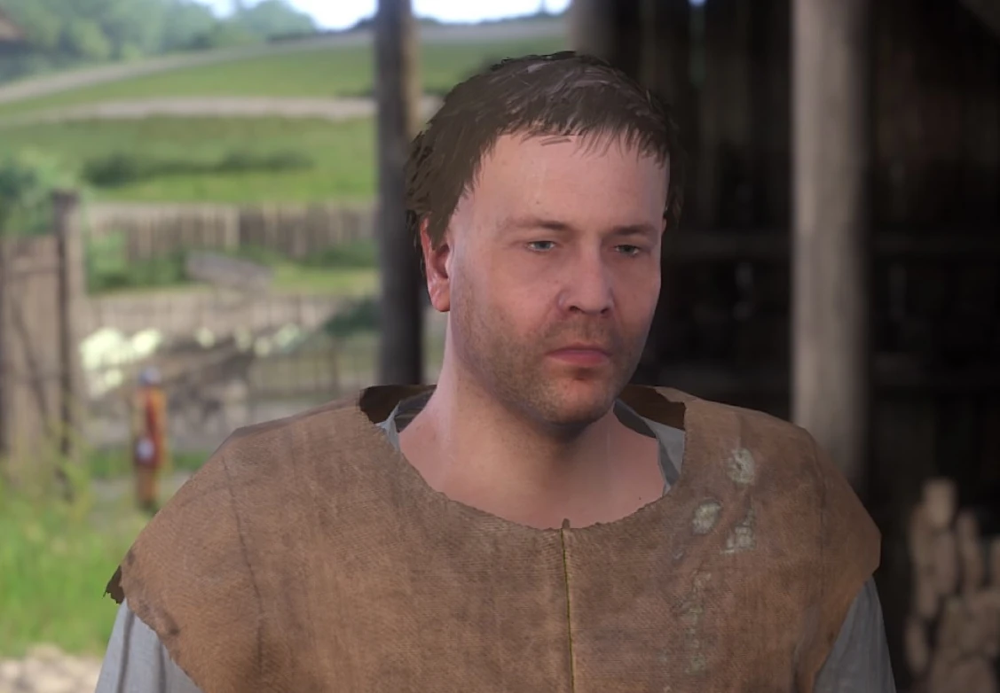
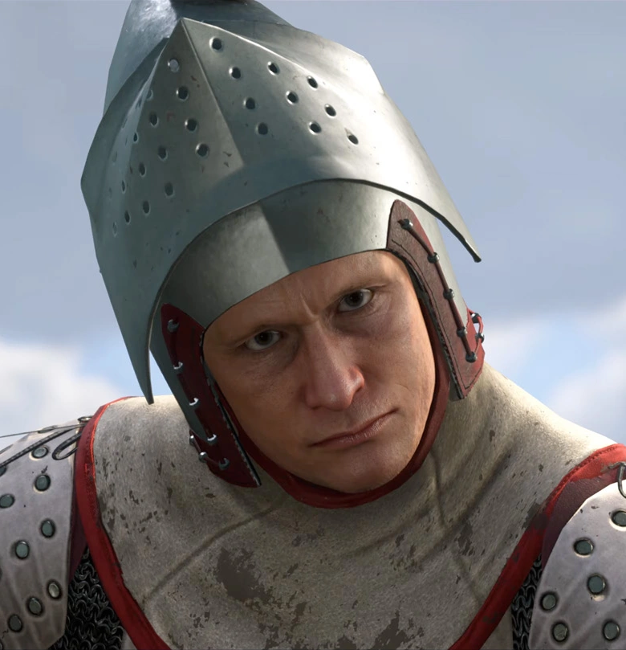
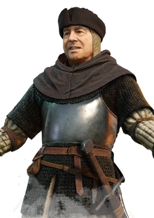

Toto je Kuneš ze Skalice, byla vypálena a proto žebrá o groše v Ratajích. Kuneš je podvodník, lapka a padouch. Nechce vrátip prachy za kladivo a hřebíky a proto je zmlácen pokaždý, co ho Jinda uvidí.

Hra se nám snaží namluvit, že Erik je záporák hry, ale ve skutečnosti je to Kuneš. Erik je pouze dítě v dospělém těle, které přepere i 5leté děcko.

Bohuta je ten ta největší sigma pod sluncem. Je to kněz, který rád chlastá a prohání sukně. Taky bojoval na Kosvě poli.